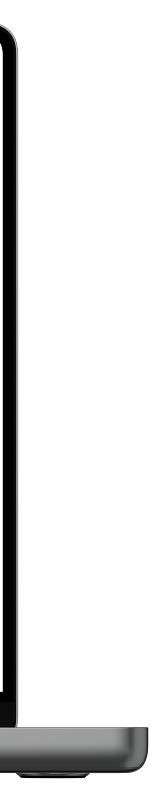
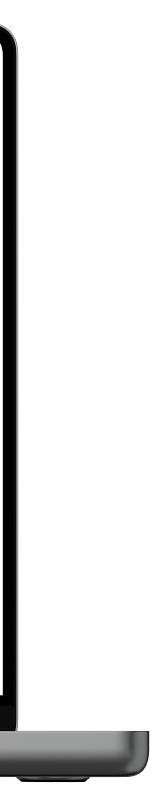

制作時間1日
- Illustrator
Adobe PremiereProのLPを制作しました。使うべき理由と、そのときにエヴァンゲリオンの映画が流行っていたので、話題の映画もこのソフトで編集していることを伝え、具体的にどんなものなのかイメージを湧きやすくしました。

制作時間1日
制作ソフトIllustrator
ハッピーハッキングキーボードと呼ばれるとても押し心地のいいキーボード（欲しい）のランディングページを制作しました。ファーストビューのインパクトを意識して、なぜ押し心地がいいのかの根拠も明記しています。

制作時間1日
制作ソフトPhotoshop
Photoshopを作ったコラージュです。私たちが汚した自然から抽出されたものはそっくりそのまま私たちの生活へと直結している。そんな意味を込めて制作しました。

制作時間5日
制作ソフトIllustrator
Some people feel the Rain. Others just get wet- レゲエの先駆者ボブマーリーが残した言葉です。何気ない日常にも意味を見出せる才能は誰にでもあるものなのに、それを見てみぬふりを続けています。細かなグラフィックから何かを見つけ出し感動してくれたら嬉しいです。

制作時間3日
制作ソフトIllustrator
芸術は進化していく。あるもので満足していた私たちはだんだんとないものまで描き出そうとしている。それは自然の本質なのか、それとも私たちが勝手に作り出した偶像なのか。巨匠たちが訴えかけるこれからの風景とは。
目線の動きに沿ったレイアウトでストレスのないポスターを意識しました。

制作時間1日
制作ソフトIllustrator
スーツは、やはりかっこいいもの。でもかっこいいと思っている人でも可愛いところはあるのです。かっこかわいい。そんな親近感を抱かせたいと思ったけっか気づけばこの色でめんどりしていました。

制作時間2日
制作ソフトIllustrator Photoshop
勉強に詰まって面白くない！！そんな君を解放したい！そう思いながら制作しました。授業の一環で既存のポスターをリデザインしていく課題で、第一に自分が生きたいと思えるようなポスターデザインにしようと思った結果このデザインになりました。気持ちよく解放されているビジュアルを全面に押し出すことで直感で行きたいと思う心をくすぐります。

制作時間1日
制作ソフトPhotoshop Illustrator
桃をそのままジュースにしました。Grace100%ジュース。おしゃれな人だと思われたいあなた！おひとついかがですか？ということで、授業の一環でジュースを売りたいクライアントがいる仮定での企画立案の授業で提出したポスターです。シンプルなビジュアルで高級感とインパクトのある桃の液化で目を引くようにデザインしました。